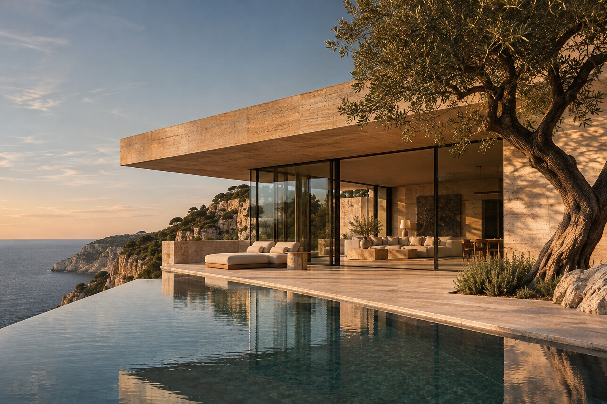

AUREL / RESIDENCE 01
Una forma más serena
de lo extraordinario.
36° 43′ N / 03° 44′ EUN REFUGIO MEDITERRÁNEO IMAGINADO
ESTUDIO DE ATMÓSFERA
01 / EL SENTIDO DEL LUGAR
Entre la piedra
y la calma.
Una casa que no compite con su entorno: forma parte de él. Travertino cálido, horizontes abiertos y espacios que invitan a una vida sin prisa.
420 M² / INTERIOR CONCEPTUAL04 SUITES PRIVADAS∞ VISTAS AL HORIZONTE
02 / RECORRE EL ESPACIO
Un estudio interactivo de la planta bajaUn espacio para
vivir sin prisa.
PLANO ILUSTRATIVO · SIN ESCALA
01 / PLANTA BAJA
El salón.
Un espacio abierto enmarcado por ventanales de suelo a techo. El horizonte forma parte de la habitación, y la habitación forma parte del paisaje.
78M² / ÁREA CONCEPTUAL
Imagina tu propio espacio ↗TU MARCA PODRÍA SENTIRSE ASÍ
Una impresión.
Que permanece.
Crea el tuyo con JEM ↗Un estudio de diseño original de JEM Web Solutions. Marca ficticia, imágenes y especificaciones ilustrativas. Este demo no realiza compras ni reservas.